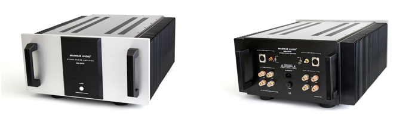
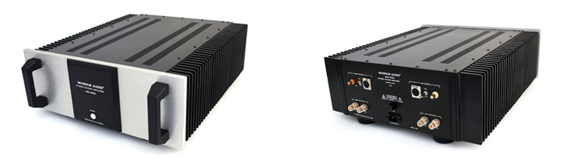
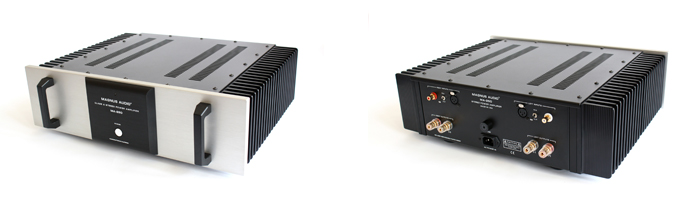
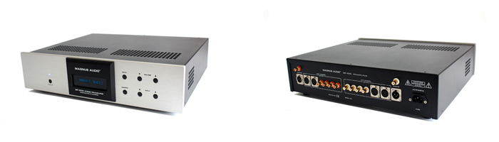
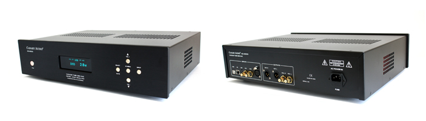
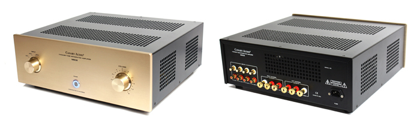
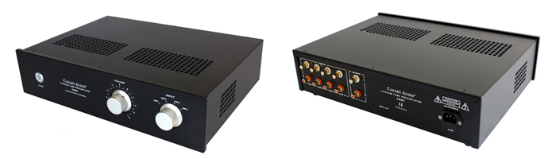

Magnus Audio MA-500
450 Watts Class AB Power Amplifier
MSRP $13,995
|

Each of the MA-500 power amplifier is handcrafted with the use of highest quality
parts and components. The audio grade toroidal transformer is custom wound according to our specifications. Even the heavy-duty
special designed heat sinks are custom made in order to meet our standards.
|
| |
| |
Magnus Audio MA-400
250 Watts Class AB Power Amplifier
MSRP $7,995
|

"The MA-400 has tube-like sonic qualities, such as richer and more natural
colors/tonality/timbres, three-dimensional imaging, and a grainless liquidity not often found in solid-state amplifiers.
However, this does not come at the expense of transparency and micro-details or a lack of dynamics and lower-frequency
extension or control. I believe that--based on performance, quality of parts, and the high level of construction - the Magnus
Audio MA-400 stereo amplifier belongs in the higher echelon of solid-state equipment on today's market."
Terry London, Staff Reviewer for hometheaterreview.com
|
| |
| |
Magnus Audio MA-260
Pure Class A Power Amplifier
MSRP $5,995
|

The MA-260 is a 2 channel stereo power amplifier in pure Class A operation. With
the use of 5 pairs carefully selected and matched powerful MOSFET transistors per channel (10 pairs in total), the MA-260 is
capable of delivering a guaranteed linear output of 45 watts x 2 into 8 ohms.
|
| |
| |
Magnus Audio MP-1000
Stereo Preamplifier
MSRP $3,995
|

The MP-1000 features six analog inputs, two of which are balanced. There are two outputs, one single-ended and one balanced.
The updated front panel has metal buttons for all functions of the preamplifier. The dot matrix display shows the volume level
as well as the selected input signal. You can select directly between inputs, adjust volume level and change the brightness of
the display via the included aluminum handheld remote.
|
| |
| |
Canary Audio KD-2000
Tube DAC
MSRP $6,995
|

The KD-2000 Tube DSD D/A converter is specially designed for those who like
to play their music digitally without sacrificing sound quality. Utilizing the very finest technologies and uncompromising
design, the KD-2000 is capable in offering the widest DSD and PCM support with highest sampling rate.
|
| |
| |
Canary Audio M608
EL34 Integrated Amplifier
MSRP $3,995
|

The M608 integrated amplifier is the result for the combination of our
extraordinary designs in power amplifiers and preamplifiers. A combination that brings a new level of excitement and
musical enjoyment.
|
| |
| |
Canary Audio C630
Tube Preamplifier
MSRP $2,850
|

The C630 stereo preamplifier is a perfect example of Canary Audio¹s craftsmanship
and build quality. All components used are carefully chosen and hand soldered on the military grade circuit boards. Like our
other products, the C630 is engineered and built to provide a lifetime of musical enjoyment.
|
| |
| |
|